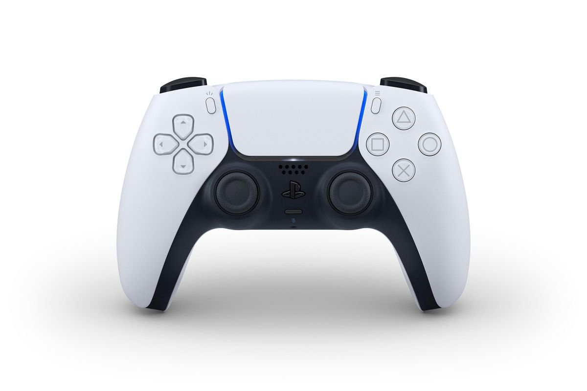

A vásárlás nem igazi, csak szimuláció célból van
A DualSense, vagyis a ps5 irányítója ezt a nevet kapta. Ez a kontroller funkcionalitásban teljesen más, mint a többi. Van ennek a kontrollernek úgymond egy heptikussága, amit úgy kell elképzelni, hogy a ravasza teljesen megváltozott mehanikailag, hiszen olyan tulajdonságot kapott, hogy a ravaszát mikor meghúzza az ember egy lövöldözés játéknál akkor a ravast mehanikája nyom ellent magának, ami miatt úgy tud viselkedni mint egy fegyver ravasz. Érzékelteti a tenyérben még azt is, ha mondjuk a játékos jégeb, fán, fémen, fűben megy, vagy kötelen csúszik, a rezgő motor olyan frekvencián működik.

A Sony legújjab kontrollerét nem csak vezetékesen, usb c-s kábellel lehet tőlteni hanem kapott ugyanúgy mint elődje egy igényes és kultúrált megjelenési töltőtt ami egy dokkolóként funkcionál.
Használat: bekell dugni a vezeték nélküli töltőt a konnektorba és az már aktív is. Ezután a kontroller alját rá kell dokkolni a dokkolóra.